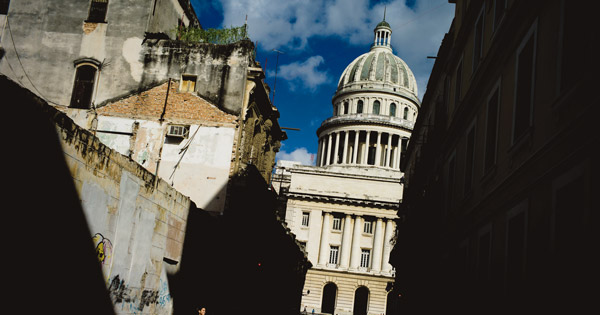

Chine
Mais que veut Xi Jinping ?
Le Congrès du Parti communiste s’achève, et la Chine a déjà engagé la « nouvelle route de la soie ». Le numéro un chinois, champion d’un multilatéralisme singulier, paradoxal, part en campagne pour réinventer un capitalisme à la chinoise, écrit Jean-Louis Rocca.